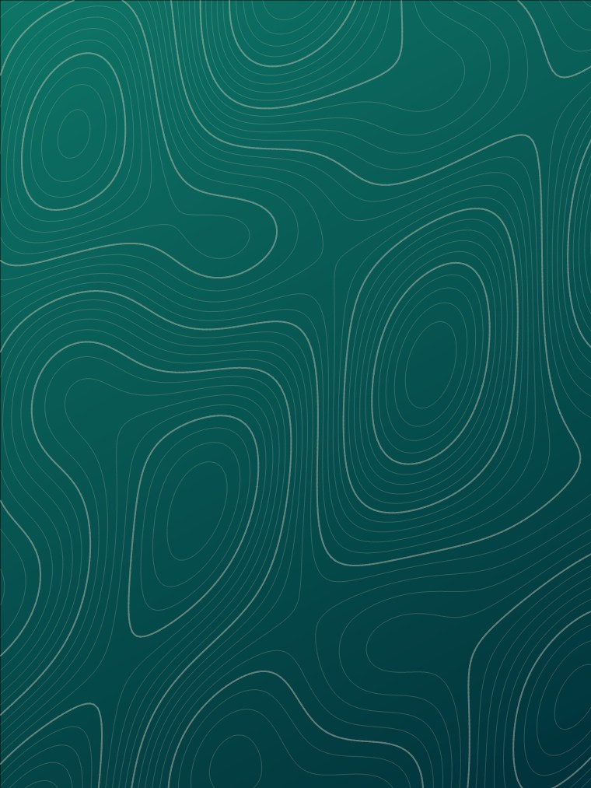

Plantas medicinais, preparo, segurança e aplicações por sistemas.
Curso Livre e Pós-graduação, seis meses, conteúdo gravado.
Conhecer →Prévia para aprovação conteúdo em validação
Naturopatia e Terapias Integrativas desde 1997
Formações em Naturopatia e Terapias Integrativas com currículo organizado, professores presentes e caminhos para diferentes momentos profissionais.
Seu ponto de partida
Escolha a situação que mais se aproxima da sua para encontrar formações, respostas e próximos passos adequados ao seu momento.
Profissional da saúde
Compare conteúdos, pré-requisitos, modalidade e certificação.
Ver caminhos recomendados →Já atuo como terapeuta
Veja quais percursos ajudam a organizar fundamentos e ampliar o repertório.
Ver caminhos recomendados →Quero começar
Compare duração, rotina de estudo e pré-requisitos.
Ver caminhos recomendados →
1Formação em Naturopatia
As disciplinas avançam por bases do corpo e da saúde, recursos terapêuticos, relação com o aluno e práticas de alimentação e estilo de vida.
Formações
Compare profundidade, rotina de aula, escolaridade, próxima turma e investimento.
Curso Livre e Pós-graduação, seis meses, conteúdo gravado.
Conhecer →Extensão e Pós-graduação, doze meses.
Conhecer →Compare opções de dois, quinze ou dezoito meses.
Comparar →Curso Livre, sete meses.
Conhecer →Curso Livre, seis meses.
Conhecer →Extensão e Pós-graduação, vinte e quatro meses.
Entrar na lista →Como a formação acontece
Cada formação organiza orientação, acesso, aulas e atividades de acordo com sua modalidade e calendário. Quando previstos, fóruns e encontros ao vivo ampliam a interação.
Escolaridade, objetivo, formato e calendário.
Acesso, contatos e expectativas da turma.
Ao vivo, gravada ou uma combinação das duas.
Fóruns, perguntas e diálogo com professores.
Atividades, avaliação e próximos passos.
Exposição dialogada
Perguntas, discussão e contextualização dos conteúdos.
Nas formações que utilizam fórum, esse espaço permanece disponível durante a disciplina.
Orientação para plataforma, salas virtuais e organização das aulas.
Modalidades
Curso Livre, Extensão e Pós-graduação seguem requisitos próprios. Confira a modalidade e os pré-requisitos de cada formação antes da matrícula.
Curso Livre, Extensão e Pós
É necessário ter autonomia de leitura e escrita.
As condições da oferta são confirmadas antes da matrícula.
O ingresso exige diploma de curso superior.
Professores
Veja formação, áreas de atuação e disciplinas relacionadas aos cursos.
Desde 1997
O INNAP atravessou diferentes cidades, formatos de ensino e gerações de alunos. A Naturopatia esteve presente desde a origem, e a trajetória da instituição se ampliou ao longo do tempo com novas áreas de formação.
Conhecer a história →O INNAP nasce em Cornélio Procópio, com a Naturopatia entre as primeiras formações de sua trajetória.
A atuação se amplia para o Rio Grande do Sul por meio de encontros presenciais.
A plataforma EAD já fazia parte da formação e ampliava o acesso aos cursos.
O INNAP reúne sua história a novas formas de aprender e a um portfólio mais amplo de formações.
“A sua confiança é o nosso maior bem.”
Conteúdos
Explicações, perguntas e critérios para quem ainda está escolhendo uma formação.
Plantas, alimentos e outros recursos naturais também possuem composição, dose, interação e contexto de uso. Essas informações ajudam a comparar formações e orientar decisões.
Ler conteúdo →Duração, modalidade, currículo, professores e certificação ajudam a distinguir uma formação de uma sequência de conteúdos. Esta lista organiza o que vale comparar.
Ler conteúdo →As modalidades respondem a momentos e pré-requisitos diferentes. Entender quem ministra, quem certifica e o que muda em cada escolha evita decisões baseadas apenas no nome do curso.
Ler conteúdo →Próximas turmas
Inscrições mensais.
Inscrições até novembro.
Inscrições até dezembro.
Inscrições até janeiro.
Inscrições até março.
Inscrições até janeiro.
Orientação
Conte sua escolaridade, experiência e objetivo. A equipe ajuda a comparar modalidades e confirmar a próxima turma.
+25 milCertificados emitidos